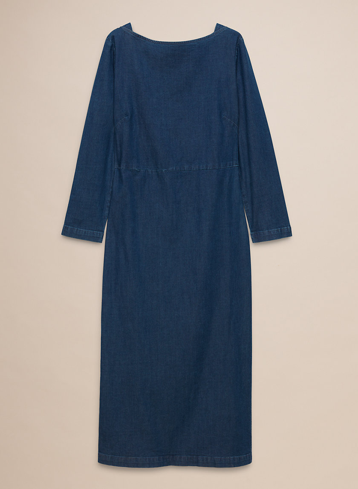

Wilfred Free Abma Dress
$40.00 $135.00 original price
- Brand
- Aritzia
- Size
- 6
- Materials
- 99% cotton, 1% spandex
- Condition
- Excellent
Midi dress in medium indigo denim with a boat neckline, three-quarter sleeves, a seamed waist, and a side slit at the hem.